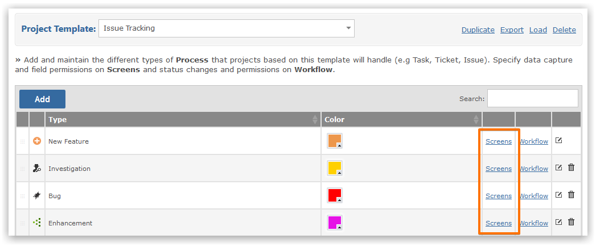
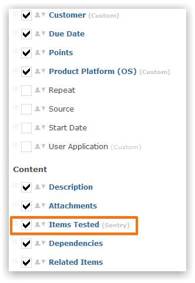
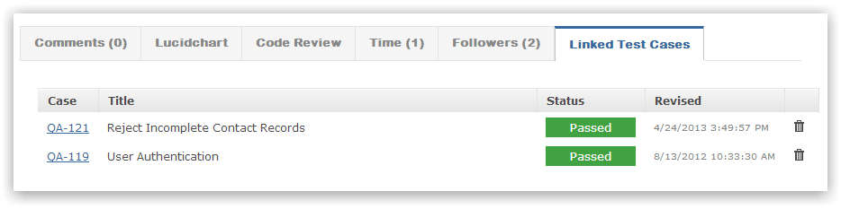
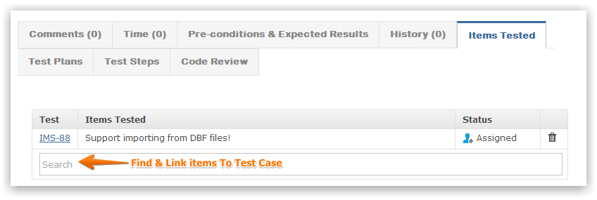
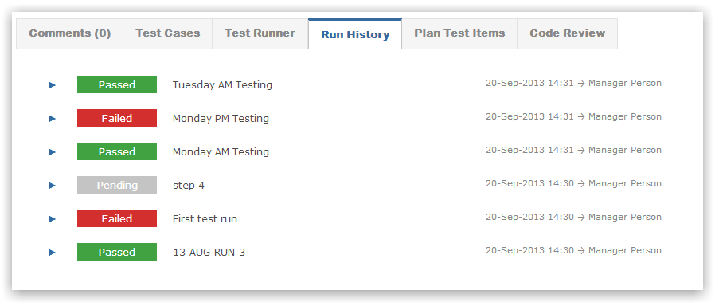
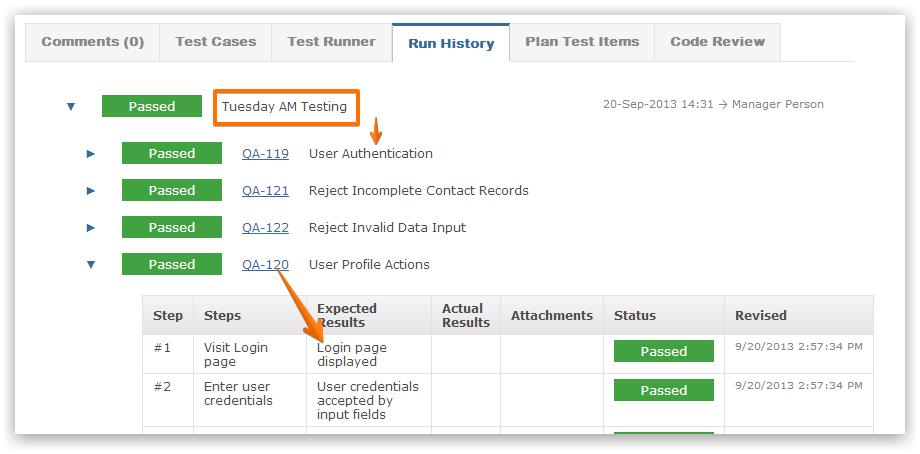

Test cases and plans can provide traceability to help teams determine which work items have test coverage.
In order view associated test cases within items, the project templates must be changed.


When viewing an item linked test cases tell you which tests are testing this item.

These associations are made from within a test case.

Every test plan records all test run executions.

You can drill into any test run to see detailed informaton.
